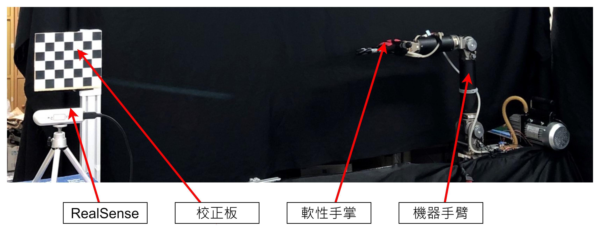
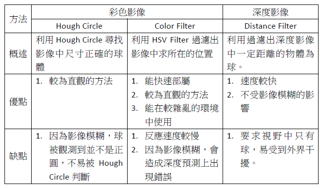
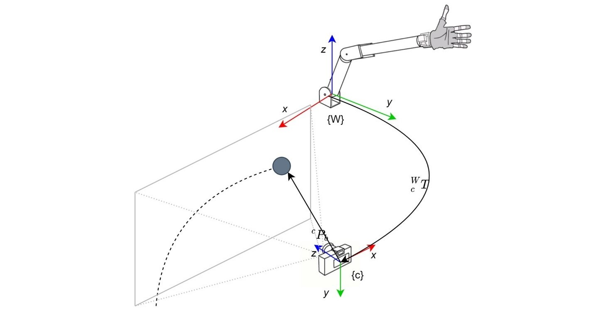
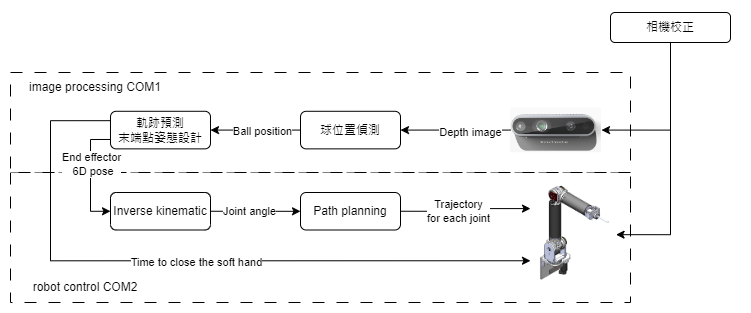

本專題為軟性手掌開發的實驗之一， 本實驗利用深度影像測量飛行中的球在空間中的位置，接著利用拋物線公式計算球的運動軌跡並預測落點，並控制機器手臂與軟性手掌接球。
本實驗所使用的設備包含Realsense435i、機器手臂、軟性機械手掌，實驗架設如下圖，於機器手臂的側邊安裝RealSense相機， 利用延伸自機器手臂底座之鋁擠型安裝校正板，並利用相機校正的方法取的相機與機器手臂之間的相對關係。
實驗環境
本文利用Realsense435觀測球在空間中的軌跡，首先本實驗假設球所運動的空間中並沒有障礙物，故相機視野中運動的物體便是球， 利用Realsense的深度圖與相機模型回推出球相對於做相機坐標系的位置，此方法能減小色彩相片觀測移動物體時影像模糊造成的誤判現象， 同時Realsense的深度影像能最高能達到90FPS的採樣速度，相比於利用彩色影像(30FPS)能收集到更多的數據達到更精確的預測。
預測方法比較
接著在取得數個球的位置後，利用斜向拋物線預測球的與機器手臂接球平面的交點並將此落點傳送給機器手臂並控制其到指定位置做接球的動作， 同時利用預測球的速度來計算合適閉掌時間點。隨著收集到球的位置資料的增加，能更加精確的預測球的落點，因此利用軌跡規劃的方法平滑的修正機器手臂動作使其移動到正確的位置。
接球實驗示意圖
本實驗利用兩台電腦做運行，兩者利用socket做通訊，主機端為執行球落點預測每當有新的預測數據產生，即將數據傳送到從機； 從機端為主要實現機器手臂控制，當收到新的落點後，接著利用Inverse Kinematics計算機器手臂角度並計算滿足速度與加速度平滑的軌跡並控制機器手臂運行。
程式架構
本實驗驗證了軟性手掌能有效地進行接球的任務，同時也驗證本實驗所提出的演算法能有效的預測球的軌跡。以下為針對本實驗可改進部分:
本實驗所採用的校正的方式是利用鋁擠型延伸校正板到相機得視野之中，並利用鋁擠型的長度建構轉移矩陣做估測，因此可能造成系統中存在誤差造成接球失誤。
本實驗所採用的方法是讓機器手臂直接到定點做等待並在合適的時機點做閉掌接球，然而下方影片的失敗案例所示若閉掌的時機沒有把控容易造成球直接彈離或因為軟性手掌的硬度低而從縫隙中彈出， 因此可以嘗試在手上加入向後退的動作讓手掌能更平滑的接起球。
本實驗所採用的預測模型是理想斜向拋射模型，其中並未考慮到空氣阻力等環境的影響，因此可以嘗試利用不同的模型亦或是機器學習的方式對軌跡做預測。